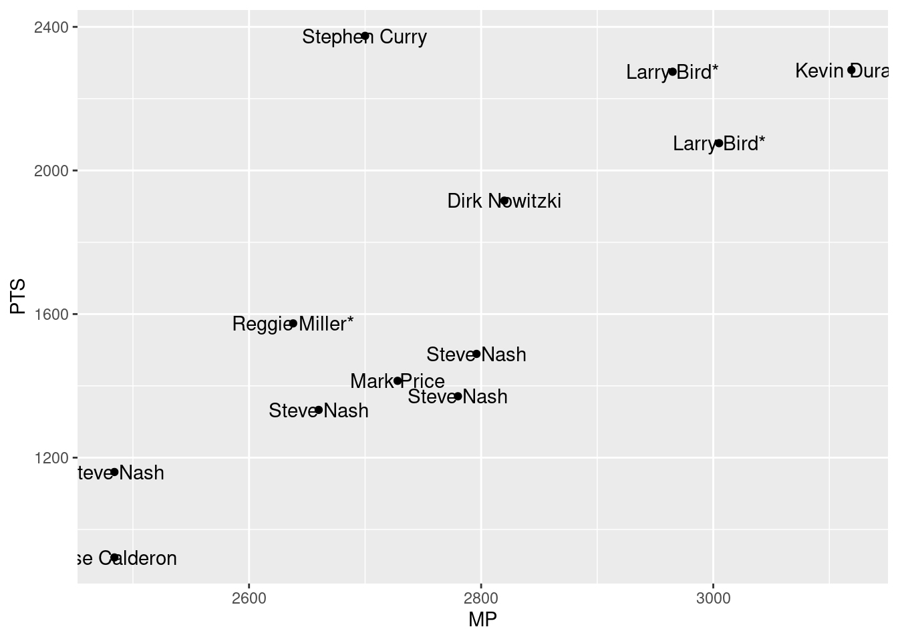

Code
#install.packages("dyplr")
library(tidyverse)
library(dplyr)
library(ggplot2)
library(lubridate)
knitr::opts_chunk$set(echo = TRUE)Henry Mitrano
February 3, 2023
If you know me, you know I’m an obsessive sports-watcher. Football, baseball, soccer, tennis, golf, anything. At the pro level, in college, overseas, little league, doesn’t matter. If there’s a game on, I’m watching it. But by far my favorite sport to watch, play, and discuss is basketball. It is a beautiful sport, highly accessible regardless of economic status or geography, endlessly entertaining to watch, and one of the places where data analytics has proven to be most useful in the world of sports. VORP, true shooting %, PER, net rating; all of these are highly detailed advanced metrics used to gauge the performance of different kinds of players. These insights are taken from massive amounts of data, over years of a players performance, and they can tell us valuable information that might not always jump off the screen when we’re simply watching them play.
I downloaded a CSV file off the web with NBA player statistics from every year since 1950. For every player, there are dozens of stats kept for every season they’ve played. I’m gonna take a look at, and break down the rarity of one of my favorite statistical anomalies- the 50/40/90 season.
A 50/40/90 season is when a player, over the course of one regular season, averages 50% shooting from the floor (on all field goal attempts), 40% on 3 point shot attempts, and 90% from the free throw line. It is an extremely rare occurence- it has happened a handful of times in the NBA since statkeeping began, and only players with the purest and most complete offensive games have even come close to accomplishing it. So who has, and when?
Let’s read in our data and work with it a bit. For starters, an important thing to note is that the 3 point shot wasn’t introduced at the NBA level until 1979- so for players in seasons before then, their 3PM and 3P% stats are listed as NA. Lets change our set to only include player stats from seasons later than 1979.
New names:
Rows: 24691 Columns: 53
── Column specification
──────────────────────────────────────────────────────── Delimiter: "," chr
(3): Player, Pos, Tm dbl (48): ...1, Year, Age, G, GS, MP, PER, TS%, 3PAr, FTr,
ORB%, DRB%, TRB%,... lgl (2): blanl, blank2
ℹ Use `spec()` to retrieve the full column specification for this data. ℹ
Specify the column types or set `show_col_types = FALSE` to quiet this message.
• `` -> `...1`Boom- as we can see, no player seasons from before 1980 are shown. Every player with a 3 point attempt has a valid (non NA) 3P%, and their makes and misses are all recorded. Now we know we are working with all the potential pool of players that could have had a 50/40/90 season. Now, lets put in our criteria. We want to build a dataset that only includes players with FG% >= .5, 3P% >=.4, and FT% >= .9. Here we go;
We now have everyone that has shot above 50 percent from the field AND 90 percent from the free throw line since 1980. We’re having a hard time manipulating the 3P and 3PA variables because of the number in their names, so we’ll go ahead and rename the columns.
Now that we have column names we can work with, lets eliminate all players from this list who didn’t shoot above 40 percent from 3 that season- it should give us all our 50/40/90 players!
This should be it… or is it? I’m a huge basketball fan, and even I’ve never heard of this (checks tibble) ‘Roger Phelgley’ character. According to the web, only 9 NBA players have ever done it! So what gives! Well, there are stipulations to that- players must have played a certain number of games, and taken at least a minimum number of each kind of shot for their percentages to qualify. Roger Phegley attempted only 1 three pointer in that fateful 1984 season. He made it- does that mean he shot 100% from 3 that year? Technically, but it doesn’t make him an all time offensive player. So lets cut out those outlying seasons, and mandate that players shoot a certain number of each shot. Lets say they need to have attempted 500 field goals, 100 3 pointers, and 100 free throws. That’s reasonable, I’d say.
Holy smokes, is that Jose Calderon? JOSE CALDERON had a 50/40/90 season! You’ve gotta be kidding me! If there’s one thing the Europeans have going for them, its efficiency.
Bt there you have it! It is extremely rare to have 1 50/40/90 season. Larry Bird did it twice, Steph Curry, KD, Steve Nash a bunch. All those guys are hoopers. No denying it. I think Malcolm Brogdon (shoutout the Celtics) had one recently but this data doesn’t go back to that far. Now lets visualize this data.
Here, we show a scatterplot with all the players from our final dataset. On the x axis, we sort minutes played. On the y axis, we go up by the players total points that season. This way we can kind of compare the 50/40/90 seasons- who was vital to their teams performance, and scored most of the points? Which players played a ton of minutes but didn’t score as many points, alluding to the fact that they benefitted from being on a great team and getting a lot of open looks?

THE TRUTH IS REVEALED. Despite having a 50/40/90 season by our criteria, Jose Calderon barely played 2300 minutes that season. He had less points than every other player by at least 200, and the closest to him is Steve Nash, a point guard who also averaged 10 assists a game that same season (MVP! MVP!). He has a fraudulent 50/40/90 season, and I will not be convinced of otherwise.
Meanwhile, Steph Curry is just some kind of freak.That was his 2015-16 campaign, the legendary unanimous MVP season, and clearly he deserved that accolade. He had more points that season than any other player with a 50/40/90 season in history. He also did it playing hundreds of minutes LESS than Kevin Durant, Larry Bird, and Dirk, who all played more and scored less points. Absurd. He was on another level that year.
Wow, that was a whirlwind. We’ve learned so much about the history of the game and some of its best offensive players in such a short time. And we learned that not all efficiency is considered equal- we would much prefer high volume efficiency over whatever that chump Jose Calderon is doing to inflate his percentages. Fraud!
---
title: "Final Project"
author: "Henry Mitrano"
desription: "Descriptive Statistics and Visualizing"
date: "02/3/2023"
format:
html:
df-print: paged
toc: true
code-fold: true
code-copy: true
code-tools: true
categories:
- finalproject
---
```{r}
#| label: setup
#| warning: false
#install.packages("dyplr")
library(tidyverse)
library(dplyr)
library(ggplot2)
library(lubridate)
knitr::opts_chunk$set(echo = TRUE)
```
## Reading in and Describing Data
If you know me, you know I'm an obsessive sports-watcher. Football, baseball, soccer, tennis, golf, anything. At the pro level, in college, overseas, little league, doesn't matter. If there's a game on, I'm watching it. But by far my favorite sport to watch, play, and discuss is basketball. It is a beautiful sport, highly accessible regardless of economic status or geography, endlessly entertaining to watch, and one of the places where data analytics has proven to be most useful in the world of sports. VORP, true shooting %, PER, net rating; all of these are highly detailed advanced metrics used to gauge the performance of different kinds of players. These insights are taken from massive amounts of data, over years of a players performance, and they can tell us valuable information that might not always jump off the screen when we're simply watching them play.
I downloaded a CSV file off the web with NBA player statistics from every year since 1950. For every player, there are dozens of stats kept for every season they've played. I'm gonna take a look at, and break down the rarity of one of my favorite statistical anomalies- the 50/40/90 season.
A 50/40/90 season is when a player, over the course of one regular season, averages 50% shooting from the floor (on all field goal attempts), 40% on 3 point shot attempts, and 90% from the free throw line. It is an extremely rare occurence- it has happened a handful of times in the NBA since statkeeping began, and only players with the purest and most complete offensive games have even come close to accomplishing it. So who has, and when?
Let's read in our data and work with it a bit. For starters, an important thing to note is that the 3 point shot wasn't introduced at the NBA level until 1979- so for players in seasons before then, their 3PM and 3P% stats are listed as NA. Lets change our set to only include player stats from seasons later than 1979.
```{r}
data = read_csv("_data/Seasons_Stats.csv")
stats_since_1980 <- subset(data, Year > 1979)
head(stats_since_1980)
```
Boom- as we can see, no player seasons from before 1980 are shown. Every player with a 3 point attempt has a valid (non NA) 3P%, and their makes and misses are all recorded. Now we know we are working with all the potential pool of players that could have had a 50/40/90 season. Now, lets put in our criteria. We want to build a dataset that only includes players with FG% >= .5, 3P% >=.4, and FT% >= .9. Here we go;
```{r}
highFG <- subset(stats_since_1980, FG/FGA >= .5)
highFGandFT <- subset(highFG, FT/FTA >= .9)
head(highFGandFT)
```
We now have everyone that has shot above 50 percent from the field AND 90 percent from the free throw line since 1980. We're having a hard time manipulating the 3P and 3PA variables because of the number in their names, so we'll go ahead and rename the columns.
```{r}
colnames(highFGandFT)[35] ="threesMade"
colnames(highFGandFT)[36] ="threesAttempted"
colnames(highFGandFT)[37] ="threePointPercentage"
head(highFGandFT)
```
Now that we have column names we can work with, lets eliminate all players from this list who didn't shoot above 40 percent from 3 that season- it should give us all our 50/40/90 players!
```{r}
fiftyFortyNineties <- subset(highFGandFT, threePointPercentage >= .4)
head(fiftyFortyNineties)
```
This should be it... or is it? I'm a huge basketball fan, and even I've never heard of this (checks tibble) 'Roger Phelgley' character. According to the web, only 9 NBA players have ever done it! So what gives! Well, there are stipulations to that- players must have played a certain number of games, and taken at least a minimum number of each kind of shot for their percentages to qualify. Roger Phegley attempted only 1 three pointer in that fateful 1984 season. He made it- does that mean he shot 100% from 3 that year? Technically, but it doesn't make him an all time offensive player. So lets cut out those outlying seasons, and mandate that players shoot a certain number of each shot. Lets say they need to have attempted 500 field goals, 100 3 pointers, and 100 free throws. That's reasonable, I'd say.
```{r}
fiftyFortyNinetiesMinThrees <- subset(fiftyFortyNineties, threesAttempted >= 100)
fiftyFortyNinetiesMinThreesAndFG <- subset(fiftyFortyNinetiesMinThrees, FGA >= 500)
fiftyFortyNinetiesMinUsage <- subset(fiftyFortyNinetiesMinThreesAndFG, FTA >= 100)
view(fiftyFortyNinetiesMinUsage)
```
Holy smokes, is that Jose Calderon? JOSE CALDERON had a 50/40/90 season! You've gotta be kidding me! If there's one thing the Europeans have going for them, its efficiency.
Bt there you have it! It is extremely rare to have 1 50/40/90 season. Larry Bird did it twice, Steph Curry, KD, Steve Nash a bunch. All those guys are hoopers. No denying it. I think Malcolm Brogdon (shoutout the Celtics) had one recently but this data doesn't go back to that far. Now lets visualize this data.
## Visualizing and Customizing Data
Here, we show a scatterplot with all the players from our final dataset. On the x axis, we sort minutes played. On the y axis, we go up by the players total points that season. This way we can kind of compare the 50/40/90 seasons- who was vital to their teams performance, and scored most of the points? Which players played a ton of minutes but didn't score as many points, alluding to the fact that they benefitted from being on a great team and getting a lot of open looks?
```{r}
ggplot(fiftyFortyNinetiesMinUsage, aes(x =MP, y=PTS)) + geom_point() + geom_text(aes(label = Player))
```
THE TRUTH IS REVEALED. Despite having a 50/40/90 season by our criteria, Jose Calderon barely played 2300 minutes that season. He had less points than every other player by at least 200, and the closest to him is Steve Nash, a point guard who also averaged 10 assists a game that same season (MVP! MVP!). He has a fraudulent 50/40/90 season, and I will not be convinced of otherwise.
Meanwhile, Steph Curry is just some kind of freak.That was his 2015-16 campaign, the legendary unanimous MVP season, and clearly he deserved that accolade. He had more points that season than any other player with a 50/40/90 season in history. He also did it playing hundreds of minutes LESS than Kevin Durant, Larry Bird, and Dirk, who all played more and scored less points. Absurd. He was on another level that year.
Wow, that was a whirlwind. We've learned so much about the history of the game and some of its best offensive players in such a short time. And we learned that not all efficiency is considered equal- we would much prefer high volume efficiency over whatever that chump Jose Calderon is doing to inflate his percentages. Fraud!